Comment ajouter votre lieu à Habiter, c’est dire ici ?
1) Trouver un lieu
- • Dans le panneau de droite, cliquez sur la barre de recherche « Tapez votre adresse ici… ».
- • Tapez n’importe quoi, de « Rue Oberkampf, Paris » à « Gràcia, Barcelone » ou « Lisbonne ».
- • Cliquez sur « Rechercher ». Le globe se centre sur votre résultat.
2) Déposer ou ajuster l’épingle
- • Une épingle apparaîtra à l’endroit du résultat.
- • Faites-la glisser pour affiner l’endroit (coin de rue, bâtiment, parc).
- • Cliquez sur « Ajouter votre note ici » pour écrire votre note.
3) Écrire votre note
- • Dans « Ajouter votre note ici », partagez un souvenir, une routine, un ressenti — ce que “habiter” signifie pour vous.
- Idées :
- • Passage : un trajet que vous empruntez, un arrêt de bus, une entrée.
- • Trace : une marque laissée — traces de pas, affiches, dessins à la craie.
- • Installation : une chambre, un banc, un atelier, un campement temporaire.
4) Soumettre
- • Cliquez sur « Enregistrer » pour ajouter votre point.
- • Votre point apparaît désormais sur le globe, visible par les autres.

5) Corriger une erreur
- • Cliquez sur « Supprimer la dernière entrée » pour retirer votre ajout le plus récent.
- • Ne rafraîchissez PAS la page avant de le faire, sinon les changements seront sauvegardés et vous ne pourrez plus supprimer l’entrée.
Conseils pour une belle contribution :
- • Vous n’avez pas besoin d’une adresse précise. Un quartier ou un repère proche fonctionne.
- • Protégez la vie privée. Si le lieu est sensible (domicile, adresse d’ami·e), placez l’épingle à l’endroit public le plus proche.
- • Soyez respectueux. Pas de données personnelles sur autrui ; restez bienveillant et sûr pour tout âge.
- • Toutes les langues sont les bienvenues. Écrivez dans celle qui vous semble la plus juste pour le souvenir.
Dépannage :
- • La recherche ne trouve rien ? Essayez un terme plus large (commencez par la ville, puis zoomez).
- • L’épingle ne bouge pas ? Zoomez et déplacez-la lentement ; puis cliquez une fois pour la fixer.
- • Publication par erreur ? Cliquez tout de suite sur « Supprimer la dernière entrée », ne rafraîchissez pas la page.
- • Le texte ne s’enregistre pas ? Vérifiez que vous avez bien écrit quelque chose dans la boîte de note, puis réessayez.